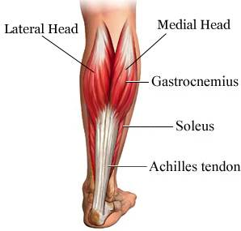

Achilles Tendon Rupture
An Achilles tendon rupture is when you tear the tissue that connects your calf muscle to your heel bone. If you rupture your Achilles tendon, you can either partially or completely tear the tendon. This makes it difficult to walk and your ankle will feel weak. Although you can rupture your Achilles tendon at any age, most people are between 27 and 49 when they do it, and don’t exercise much. 
Symptoms and Signs
- You could feel a sudden onset pain in the ankle or calf area.
- You may hear a 'pop' sound at the time of the rupture.
- The heel area will become swollen and bruised.
- You will struggle to walk properly.
- You could be able to feel a defect in the tendon.
- You will struggle to point and lift your toes.
- While walking your foot will hang down and won't be able to be lifted easily.
If you believe you have the above symptoms please go to A&E to be assesed
Examination of Rupture
Physical Examaination of Achilles Tendon Rupture via the Thompson Test
- Patient lies face-down (prone) on an examaination bed
- Feet extend farther than the end of the bed.
- Examiner squeezes the calf muscle.
- In a normal person it should cause the foot to plantarflex. In a patient with Achilles tendon rupture, the foot will not raise.
- Palpate to feel the ruptured Achilles tendon.
Management of Rupture
Options to an Achilles Tendon Paitent
- SURGERY OPTIONS
Rehabilitation
Post Surgery: how to get back to normal life
- REHAB OPTIONS